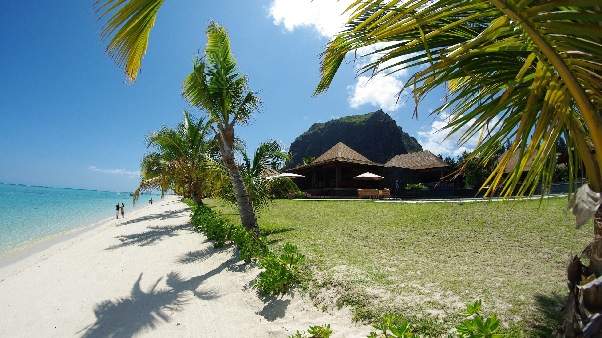

Shahad Al-harthi
Freelancer Omantel

Spectacular Beaches
The sea is a vast body of saltwater that covers a large portion of the Earth's surface. It is characterized by its deep blue color and its rhythmic movement, with waves crashing against the shore. The sea is home to a diverse range of marine life, including fish, dolphins, whales, and coral reefs. It provides a habitat for countless species and plays a crucial role in regulating the Earth's climate. The sea also offers various recreational activities, such as swimming, surfing, and sailing, making it a popular destination for tourists and nature enthusiasts.